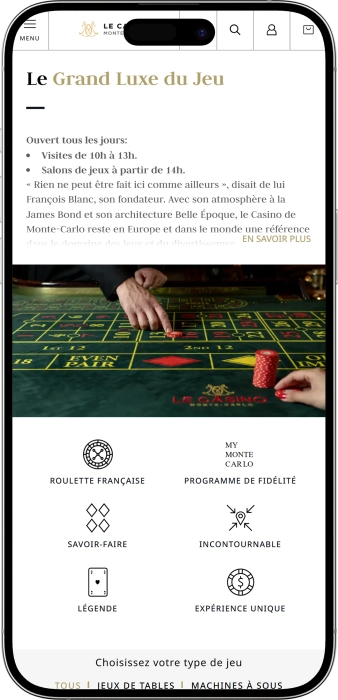

Offre de bienvenue exclusive de
Offre de bienvenue exclusive de
Casino de Monte‑Carlo — casino légendaire, jeux, salons et détente
Top casinos
Détails du bonus
Casino
Bonus
Note
Tours gratuits
Plus d'infos
Obtenir
Avantages
-
Roulette européenne dans des salons historiques
-
Blackjack et baccara avec croupiers
-
Machines à sous modernes, jackpots progressifs
-
Limites de mise variées selon salons
-
Ambiance Belle Époque, service raffiné
-
Emplacement central, accès très pratique
-
Dimension culturelle : visites, opéra
- Le Casino de Monte‑Carlo séduit par l’équilibre entre prestige et confort d’accueil. On peut y mêler jeu, découverte des décors et sortie du soir. L’un des grands atouts est la flexibilité : visite en journée ou expérience de jeu complète.
Casino de Monte‑Carlo App


À propos Casino de Monte‑Carlo
Le casino se distingue par son prestige iconique et des salons à l’impact visuel unique. À noter : jackpots et plafonds de paiement varient selon la machine, la table et les règles en vigueur ; les montants peuvent évoluer.
- Jackpot machines : jusqu’à 1 000 000 €.
- Gros gain : jusqu’à 500 000 €.
- Bon d’entrée : 10 €.
Le Casino de Monte‑Carlo n’est pas seulement un lieu de jeu, c’est un symbole de prestige et de tradition. L’ambiance évoque un art de vivre élégant, typique des grandes adresses européennes. On y vient autant pour l’expérience du jeu que pour la beauté des décors.
Les espaces permettent de passer naturellement d’une visite calme à une soirée plus animée. Les salons mêlent héritage historique et organisation moderne du service. Les amateurs de jeux de table retrouvent des formats classiques et une tenue irréprochable des croupiers. Les passionnés de machines apprécient la variété et le rythme. Les pauses gourmandes et les bars complètent l’expérience et donnent du relief à la visite. Tout au long de l’année, le lieu garde un esprit événementiel et festif. Au final, on vit une sortie complète, bien au‑delà du simple jeu.
Légende, style et rituel du soir : l’expérience du Casino de Monte‑Carlo
Le Casino de Monte‑Carlo se vit comme une scène, où chaque détail est pensé pour marquer les esprits. On y retrouve un luxe discret, une lumière maîtrisée, le murmure des jetons et une sensation de club élégant. L’esprit Belle Époque se lit dans les décors, les volumes et la façon d’accueillir. Même une visite courte devient souvent un moment à part, et c’est précisément ce que recherchent les visiteurs. La discrétion et le respect de la clientèle font partie intégrante de l’expérience.
Le fonctionnement se prête généralement à deux scénarios, ce qui facilite l’organisation. En journée, l’approche est plus calme et tournée vers la découverte des espaces et de la dimension culturelle. À partir de l’après‑midi, place au jeu : les salons s’animent, l’ambiance change et l’élégance vestimentaire prend davantage d’importance. Ce rythme permet de choisir son style de visite, de la promenade à la session de jeu. L’affluence varie selon la saison et les grands événements, ce qui donne des soirées très différentes.
Dans et autour des salons de jeu, la logique de confort et de pause est essentielle. Les bars sont perçus comme un rituel : apéritif, échange, puis retour au jeu ou au programme du soir. Selon l’heure, on trouve facilement le bon format, du café léger au cocktail avant la table. Les espaces de restauration et de boissons soutiennent une ambiance mondaine sans basculer dans le bruit. C’est un point clé : l’élégance reste au centre.
Un autre atout fort est l’écosystème hôtelier haut de gamme à proximité. Les hôtels emblématiques permettent de composer un « parcours » complet : hébergement, dîner, puis sortie au casino. Ce format convient à ceux qui veulent vivre Monte‑Carlo comme une expérience cohérente, sans contraintes logistiques. Les standards de service du complexe se ressentent jusque dans le casino. Ainsi, une simple visite peut facilement devenir un week‑end.
La dimension événementielle renforce le prestige : opéra, formats musicaux, soirées saisonnières et programmes spéciaux amplifient l’esprit de fête. Même sans jouer, on peut venir pour l’architecture, l’ambiance et la sortie mondaine. Beaucoup apprécient de pouvoir réunir culture et casino en une seule soirée. Les divertissements ne concurrencent pas le jeu : ils le prolongent avec finesse. C’est ce mélange rare qui entretient la légende.
Les offres promotionnelles et « packs » sont le plus souvent liés au type d’entrée ou à des billets spécifiques, parfois complétés par des avantages boissons ou restauration. Ces formules rendent la première visite plus simple et plus lisible. L’approche reste premium : les bonus ne sont pas « agressifs » comme dans des lieux plus généralistes. Les conditions dépendent généralement de l’horaire, du niveau d’accès et des opérations en cours. L’expérience se vit alors comme un service, plus que comme une chasse aux promotions.
Service, langues et paiements : comment fonctionnent les gains au Casino de Monte‑Carlo
Le personnel du Casino de Monte‑Carlo est tourné vers une clientèle internationale, avec un style d’accueil proche des palaces : discret, rapide et très respectueux. Dans les salons, on peut compter sur une assistance claire pour les règles, les mises et le fonctionnement des tables, ainsi que sur une gestion tactful des situations sensibles. La communication est pensée pour éviter toute friction linguistique. En période d’affluence, la sécurité et les superviseurs de salle contribuent à fluidifier les déplacements. Ici, le service fait partie de l’expérience, pas seulement du décor.
Les langues de contact incluent généralement le français et l’anglais comme bases, avec une ouverture à d’autres langues européennes selon les équipes et les horaires. Dans les espaces premium, il est fréquent de trouver des collaborateurs capables de faciliter la communication pour des visiteurs étrangers. Si vous avez un besoin précis, il suffit souvent de demander à un responsable de salle d’orienter vers la bonne personne. Les clients VIP bénéficient parfois d’un accompagnement plus personnalisé. Cela devient particulièrement utile lors d’opérations importantes à la caisse.
L’euro est la référence, ce qui simplifie la gestion du budget. À l’intérieur, les opérations en espèces via la caisse restent classiques, tandis que les paiements par carte s’appliquent surtout aux services là où c’est autorisé (bars, restaurants, prestations). Pour jouer, le schéma est simple : achat de jetons à la caisse, utilisation à la table, puis reconversion en fin de session. Pour les machines, les modalités dépendent du matériel et du format d’accès. Les règles de carte, de limites et de procédures peuvent varier selon les salons, d’où l’intérêt de se renseigner directement sur place.
Les distributeurs et l’échange de devises se trouvent généralement dans l’environnement touristique à proximité, ce qui facilite la préparation. Dans un cadre premium, la sécurité implique parfois des contrôles et des vérifications, il est donc recommandé d’anticiper les montants et de disposer d’une pièce d’identité avec photo. Si vous arrivez avec une autre monnaie, il est souvent plus pratique d’effectuer le change avant la visite ou via des points officiels proches. Vous évitez ainsi la précipitation et des frais inutiles. Les opérations importantes peuvent nécessiter des justificatifs et des contrôles de conformité.
Le retrait des gains en casino terrestre est généralement direct : les jetons sont échangés contre des espèces à la caisse, avec des étapes supplémentaires pour les gros montants. L’établissement peut demander une pièce d’identité, vérifier l’opération et consigner certaines informations au titre des obligations de sécurité. Un paiement non‑cash peut être possible selon la procédure acceptée et le niveau de gain, mais cela dépend des règles internes. Pour des montants élevés, mieux vaut demander le mode de règlement à l’avance afin d’éviter l’attente. Les gros paiements ne sont pas toujours instantanés en raison des contrôles obligatoires.
La fiscalité dépend surtout de votre résidence fiscale et des règles de votre pays. Dans de nombreux cas, le casino ne prélève pas automatiquement un impôt, mais vous pouvez avoir une obligation de déclaration chez vous. Il faut donc traiter ce point comme une question juridique personnelle, pas comme une « option » du casino. Pour être serein, vérifiez les règles applicables dans votre juridiction et conservez les documents utiles pour des montants importants. Enfin, un jeu responsable et des limites claires rendent l’expérience plus agréable et maîtrisée.
Règles de visite du Casino de Monte‑Carlo : tenue, conditions, interdits et accès
La visite du Casino de Monte‑Carlo dépend du moment : en journée, l’ambiance est plus calme et orientée découverte, puis l’après‑midi marque l’ouverture complète des salons de jeu. L’accès aux zones de jeu exige la majorité, avec un contrôle d’identité à l’entrée. La tenue est un point essentiel : l’adresse valorise une élégance soignée, cohérente avec le prestige du lieu. Selon l’horaire, les exigences peuvent se renforcer, notamment en soirée quand l’atmosphère devient plus mondaine. Certaines zones sont plus accessibles, mais les salons de jeu restent strictement encadrés. À l’intérieur, la discrétion et la sécurité priment. La photo et la vidéo sont souvent limitées, et un non‑respect peut entraîner une sortie immédiate. Les bars font partie de l’expérience, mais l’état d’ébriété est une cause fréquente de refus. Pour être à l’aise, arrivez un peu en avance afin de passer le contrôle et de vous repérer. Si vous jouez, fixez votre budget à l’avance. L’accès se fait facilement à pied, en taxi, en transport public ou en voiture avec parking à proximité.
Tenue (ce qui est généralement admis) :
- • Smart casual en journée : tenue propre, chaussures fermées, sans style sportif.
- • Plus élégant le soir : pantalon/robe, chaussures fermées, allure soignée.
- • À éviter : shorts, tongs, survêtements, tenue de plage.
Conditions d’accès (exigences de base) :
- • 18+ : salons de jeu réservés aux adultes.
- • Pièce d’identité avec photo : passeport ou carte nationale, contrôle à l’entrée.
- • Droit d’entrée : format et tarif selon l’horaire et le type d’accès.
- • Respect du règlement : comportement et sécurité obligatoires.
Interdits et restrictions (règles typiques) :
- • Captation non autorisée : photo/vidéo souvent interdite ou strictement encadrée.
- • Tenue non conforme : motif de refus d’entrée.
- • Comportement agressif : intervention immédiate de la sécurité.
- • Mineurs : interdits dans les zones de jeu.
Accès et stationnement
- • Taxi/transfert : très confortable en soirée.
- • À pied : idéal si vous logez au centre.
- • Parkings : parkings souterrains proches, prévoir du temps aux heures de pointe.
- • Transports publics : pratique en journée pour une visite courte.
Programme de fidélité du Casino de Monte‑Carlo : niveaux, avantages et bonus
Le programme de fidélité du Casino de Monte‑Carlo repose généralement sur la reconnaissance du client et l’accumulation d’avantages au fil des visites. L’objectif n’est pas uniquement de récompenser le jeu, mais d’améliorer l’expérience globale : accès plus fluide, service plus rapide, offres plus personnalisées. Dans l’univers premium, la valeur vient souvent de la qualité des privilèges : traitement prioritaire, invitations, conditions renforcées sur les événements et la gastronomie. L’inscription est en principe ouverte aux adultes sur présentation d’une pièce d’identité avec photo. Les gains de points dépendent le plus souvent de l’activité : jeu, consommations, participation à des moments événementiels. Plus le statut monte, plus la personnalisation progresse. Un vrai atout est la possibilité de regrouper plusieurs expériences sous un même profil : jeu, dîner, spectacle, séjour hôtelier au sein de l’écosystème du complexe. Des journées à points majorés ou des offres saisonnières peuvent exister. Les règles évoluent parfois selon les périodes, d’où l’intérêt de considérer les chiffres ci‑dessous comme des repères à confirmer lors de l’inscription. Voici une présentation très pratique de la logique habituelle et des bonus fréquemment rencontrés dans ce type de programme premium.
Conditions d’inscription
- • Âge : 18+ avec accès aux zones de jeu.
- • Documents : passeport ou carte nationale avec photo.
- • Processus : formulaire + acceptation du règlement.
- • Support : carte membre ou profil digital (selon le cas).
- • Activation : généralement immédiate ou le jour même.
Niveaux et obtention
- • Classic (base) : attribué dès l’inscription ; permet l’accumulation.
- • Silver : atteint par des visites régulières et une activité stable sur une période.
- • Gold : demande une activité plus importante ; ouvre souvent des invitations et plus d’avantages.
- • Platinum/VIP : pour clients assidus ; accent sur suivi personnalisé et formats privés.
Bonus et privilèges
- • Bonus d’accueil : 10–20 € sous forme de bon/crédit services (exemple).
- • Accumulation de points : 1 point par 1–2 € d’activité/dépenses (exemple).
- • Conversion : 100 points = 10 € pour bar/restaurant/loisirs (exemple).
- • Anniversaire : attention ou bonus 20–50 € et/ou invitation (exemple).
- • Accès/caisse prioritaires : service plus rapide aux heures de pointe (selon niveau).
- • Offres personnalisées : dîner, cocktails, billets (valeur 30–150 € et plus, exemple).
- • Accompagnement VIP : contact dédié, assistance réservations (Gold+).
- • Points majorés : opérations « x2 » sur certaines périodes (exemple).
Fournisseurs de logiciels
Divertissement et jeux au Casino de Monte‑Carlo
Bonus et offres spéciales du Casino de Monte‑Carlo : entrée, jeu, divertissements et saisons
En dehors d’un programme de fidélité classique, le Casino de Monte‑Carlo propose souvent des formules simples pour rendre la première expérience plus avantageuse. Le format le plus courant est une entrée incluant un bon à utiliser sur les machines, au bar ou au restaurant selon certaines conditions. C’est pratique : une partie de la valeur revient immédiatement dans la visite, sans règles trop complexes. Au fil de l’année, des offres thématiques apparaissent, liées aux saisons et aux grands temps forts : semaines festives, soirées spéciales, collaborations gastronomiques. On peut aussi rencontrer des tournois et animations, où l’intérêt principal est l’ambiance compétitive plus que la promesse d’un gain. Les packs « dîner + soirée » transforment le casino en composante d’une sortie complète. Pour une visite courte, les offres combinant jeu et détente sur un même parcours sont particulièrement appréciées. Il faut toutefois garder une idée claire : un bonus ne garantit aucun résultat et ne doit jamais pousser à dépasser son budget. La meilleure approche est d’y voir un plus dans une soirée planifiée. Voici les formats les plus répandus, avec des exemples chiffrés faciles à comprendre.
- • Pack d’entrée type « Casino Royal » : entrée autour de 20 € + bon 10 € machines/bar/restaurant sous conditions.
- • Visite du matin avec audioguide : repère 20 € par adulte, option culturelle sans jeu.
- • Tarifs groupe : réduction par personne selon formule (ex. 2–5 € d’économie, indicatif).
- • Tournois machines : dotations pouvant aller de 1 000 € à 20 000 € (exemple de fourchette premium), avec buy‑in parfois modéré.
- • Soirées thématiques tables : animations à durée limitée, lots type jetons bonus 25–100 € (exemple).
- • Offres saisonnières : petites attentions, welcome‑drinks, créneaux « boost » (valeur 10–30 €, exemple).
- • Packs « dîner + soirée » : crédit restauration 40–100 € selon formule (exemple).
- • Événement + casino : bundles spectacle/culture + accès, avantage sous forme d’économie (ex. 15–25%, indicatif).
- • Formats VIP : valeur surtout en service (ex. set boissons offert 50–150 €, exemple).
Jeux populaires au Casino de Monte‑Carlo : tables iconiques et machines modernes
Le Casino de Monte‑Carlo se distingue par l’alliance d’une tradition européenne forte et d’un rythme de jeu contemporain. Pour beaucoup, la roulette reste l’attraction principale : elle s’accorde parfaitement aux décors historiques et crée une sensation très cinématographique. Le blackjack est également très demandé pour son dynamisme et ses règles faciles à appréhender. Le baccara et ses variantes attirent ceux qui aiment l’élégance et un tempo plus posé. Côté machines, l’intérêt vient de la diversité : des slots rapides aux modèles à jackpots progressifs. Les débutants démarrent souvent sur machines ou roulette, car l’entrée en matière est plus simple. Les joueurs expérimentés privilégient les tables pour le contact avec le croupier et la « vraie » ambiance de casino. Les salons plus calmes et certaines zones plus privatives renforcent l’impression d’exclusivité. Des tables thématiques ou mini‑animations peuvent apparaître selon la période. À garder en tête : le jeu reste un divertissement, un budget fixé à l’avance rend l’expérience plus sereine. Voici un aperçu des formats les plus recherchés.
Jeux
- • Roulette européenne : grand classique, rythme soutenu et rituel de mises.
- • Blackjack : jeu rapide, règles accessibles, interaction directe avec le croupier.
- • Baccara (Punto Banco) : tempo calme et ambiance premium.
- • Machines à sous : grande variété de thèmes, mécaniques et niveaux de mises.
- • Jackpots progressifs : slots dont le jackpot évolue (selon la machine).
- • Formats poker/variantes : possibles selon la salle et la programmation.
- • Jeux de table additionnels : différentes versions selon l’espace et la période.
Mises minimales et maximales au Casino de Monte‑Carlo : repères par tables et machines
Les limites de mise au Casino de Monte‑Carlo varient selon le salon, l’horaire et le type de table. Dans les espaces historiques, on trouve souvent des limites plus premium, tandis que certaines zones proposent une entrée plus accessible. Sur les machines, la fourchette est généralement très large : petites mises possibles, mais aussi des valeurs élevées selon les modèles. Le tableau ci‑dessous doit être lu comme un repère indicatif, car les limites peuvent évoluer selon la saison, les événements et l’affluence.
| Jeu / zone | Mise minimale (repère) | Mise maximale (repère) |
|---|---|---|
| Roulette européenne | 5 € | 10 000 € |
| Blackjack | 10 € | 5 000 € |
| Baccara / Punto Banco | 20 € | 20 000 € |
| Machines à sous (standard) | 0,10 € | 50 € / spin |
| Machines (high‑limit) | 1 € | 200 €+ / spin |
| Jackpots progressifs | 0,50 € | 100 € / spin |
Shows, événements et vie nocturne : divertissements du Casino de Monte‑Carlo et autour
Le Casino de Monte‑Carlo dépasse largement le cadre des tables : il s’intègre à un véritable scénario de soirée, où le divertissement est une extension naturelle de l’ambiance. Beaucoup apprécient de commencer par une touche culturelle, de poursuivre par le jeu, puis d’enchaîner sur une parenthèse plus musicale ou gastronomique. Tout au long de l’année, un rythme événementiel se ressent : semaines saisonnières, soirées thématiques, périodes où la ville devient particulièrement animée. Ces moments amplifient l’expérience : plus d’allure, plus de sorties, plus d’énergie. Malgré cela, l’adresse conserve une élégance maîtrisée et privilégie la qualité à l’agitation.
Les divertissements réguliers se structurent souvent autour d’une soirée « en style » : cocktail, musique, petite gastronomie et dynamique douce. Dans le complexe, certains espaces permettent de faire une pause entre deux sessions de jeu avant de revenir à table. Cette capacité à changer de rythme sans quitter un cadre premium est un vrai atout. Selon les jours, l’accent peut se déplacer vers des programmes thématiques, notamment lorsque la ville vit au rythme de grands rendez‑vous. Le casino devient alors un centre d’attraction, plus qu’un simple lieu.
Les événements spéciaux et shows peuvent suivre le calendrier des saisons, des premières culturelles et des dates emblématiques. Ils prennent souvent la forme d’une « soirée‑événement » : tenue soignée, réservation, séquence gastronomique et prolongation dans des lieux dédiés au divertissement. Pour les visiteurs organisés, les formules « dîner + programme » offrent une narration fluide. Il faut aussi distinguer ce qui se déroule au casino même et ce qui se joue dans des lieux premium voisins, complémentaires à la visite.
La vie nocturne premium repose davantage sur le style que sur l’improvisation. Si vous cherchez un format club, il est souvent porté par des lieux proches où la musique et la danse deviennent centrales. Le casino reste l’axe élégant de la nuit : début, moment fort ou final. Ce scénario plaît à ceux qui veulent une expérience complète en une seule soirée. Au final, les divertissements prolongent l’ADN du lieu au lieu de le diluer.
Tous les divertissements
- • Soirées culturelles et premières : sortie mondaine, style affirmé.
- • Soirées de jeu thématiques : ambiance spéciale, tables dédiées, mini‑animations.
- • Format lounge cocktails : musique, pause entre jeux, rythme calme.
- • Événements saisonniers : périodes festives qui intensifient l’expérience.
- • Club de nuit (infrastructures proches) : danse et prolongation après le casino.
- • Événements VIP : invitations privées, formats intimistes, service renforcé.
Restaurants, bars et hôtels autour du Casino de Monte‑Carlo : organiser un séjour parfait
Se détendre au Casino de Monte‑Carlo, c’est souvent construire une soirée faite de respirations. On ne vient pas uniquement pour jouer : on veut vivre une ambiance, boire un cocktail, admirer les salons et ressentir le tempo du lieu. Les bars et espaces de restauration rendent l’expérience plus confortable, car ils permettent de changer de rythme sans sortir du cadre premium. Dans ce type d’adresse, l’essentiel est que la gastronomie et les boissons prolongent le style — et c’est généralement le cas ici. Beaucoup structurent donc la visite comme une suite logique : apéritif, jeu, dîner tardif.
La dimension restaurant est une extension naturelle de la légende. Dans ces lieux, on vient autant pour le menu que pour la mise en scène : décors, lumière, placement, atmosphère. Le format peut aller d’un café‑dessert à un dîner complet. Il est agréable de revenir aux tables puis de refaire une pause, sans changer d’univers. Ce scénario cyclique séduit ceux qui veulent profiter sans se presser.
Les hôtels proches jouent le rôle d’ancrage : vous logez à deux pas et vous évitez les contraintes de transport tardif. Le séjour devient plus serein et plus sûr, car la soirée peut se dérouler sans urgence. Souvent, l’hôtel est choisi comme partie intégrante de l’expérience : ambiance, service, petit‑déjeuner, accès à des infrastructures de détente. Le casino devient alors un élément d’un voyage complet plutôt qu’une étape isolée. C’est ainsi que naît, pour beaucoup, le « vrai » ressenti de Monte‑Carlo.
Pour un confort maximal, il est utile de réserver et de prévoir des créneaux de jeu. En période de forte affluence, la demande augmente et peut influencer le rythme de la soirée. La meilleure approche est de décider à l’avance : priorité gastronomie ou priorité jeu, puis d’adapter le parcours. Quoi qu’il en soit, on peut vivre une soirée intense et pourtant fluide. Le tout est de garder l’équilibre.
Tous les lieux de détente
- • Le Train Bleu : restaurant‑expérience, ambiance de voyage et esprit du soir.
- • Le Salon Rose : format élégant, parfait pour un dîner « en style ».
- • Café de la Rotonde : pause café/dessert et boissons légères.
- • Bar/lounge des salons : cocktails et apéritifs entre deux sessions.
- • Hôtel de Paris (proche) : hôtel iconique pour un scénario premium complet.
- • Hôtel Hermitage (proche) : luxe plus calme, axé confort.
- • Monte‑Carlo Bay / Beach (infrastructures) : option resort pour prolonger le séjour.
FAQ
En général, passeport ou carte nationale avec photo ; il est préférable de vérifier les exigences le jour de la visite.
Cela peut exister selon les services sur place ou à proximité, sans garantie ; le plus sûr est de venir préparé.
En général non, mais l’accès peut dépendre de l’horaire, de l’affluence et du type d’entrée.
Souvent oui, à la caisse ; pour de gros montants, des contrôles supplémentaires peuvent s’appliquer.